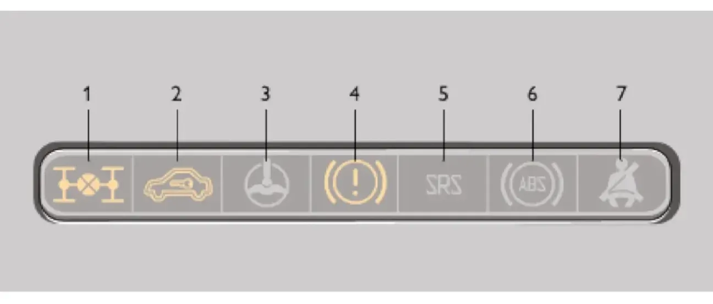

ОПИСАНИЕ АВТОМОБИЛЯ — II. Органы управления и приборы
Блок контрольных ламп
контрольные лампымаслоаккумуляторпроверьте двигательрезерв топливаблокировка дифференциала
Блок контрольных ламп показан на рисунке 20.

| № | Контрольная лампа | Назначение |
|---|---|---|
| 1 | Блокировка дифференциала | Загорается при блокировании межосевого дифференциала в раздаточной коробке. |
| 2 | Иммобилизатор | Отображает состояние электронного блока иммобилизатора. |
| 4 | Состояние тормозной системы | Загорается при включении стояночного тормоза или при недостаточном уровне тормозной жидкости в системе. |
| 7 | Резерв топлива | Загорается оранжевым светом, если в топливном баке осталось от 4 до 6,5 л бензина. |
| 8 | Габаритный свет | Загорается зелёным светом при включении наружного освещения. |
| 9 | Аварийное состояние тормозной системы | Загорается красным светом при понижении уровня жидкости в бачке гидропривода тормозов ниже метки «MIN», а также в момент включения стартера. |
| 10 | Дальний свет фар | Загорается синим светом при включении дальнего света фар. |
| 13 | Аварийная сигнализация | Загорается красным мигающим светом при включении аварийной сигнализации. |
| 14 | «ПРОВЕРЬТЕ ДВИГАТЕЛЬ» | Кратковременное загорание при включении зажигания — самотестирование. При постоянном горении — обнаружен дефект в системе. |
| 16 | Заряд АКБ | Загорается красным светом при включении зажигания и гаснет после пуска двигателя. |
| 17 | Стояночный тормоз | Загорается красным светом при включении стояночного тормоза. |
| 18 | Давление масла | Загорается красным светом при включении зажигания и гаснет после пуска двигателя. |
Предупреждение / внимание:
Запрещается эксплуатация автомобиля при постоянно горящей контрольной лампе аварийного состояния рабочей тормозной системы.
Запрещается эксплуатация автомобиля при постоянно горящей контрольной лампе аварийного состояния рабочей тормозной системы.
Предупреждение / внимание:
При работающем двигателе горящая постоянным светом контрольная лампа давления масла указывает на недостаточное давление в системе смазки двигателя. Дальнейшая эксплуатация автомобиля с горящей контрольной лампой приведёт к выходу двигателя из строя.
При работающем двигателе горящая постоянным светом контрольная лампа давления масла указывает на недостаточное давление в системе смазки двигателя. Дальнейшая эксплуатация автомобиля с горящей контрольной лампой приведёт к выходу двигателя из строя.
Предупреждение / внимание:
Свечение лампы зарядки АКБ при работающем двигателе означает нарушение нормальной работы системы электропитания автомобиля: неисправность системы зарядки аккумулятора, слабое натяжение или обрыв ремня привода генератора или неисправность самого генератора.
Свечение лампы зарядки АКБ при работающем двигателе означает нарушение нормальной работы системы электропитания автомобиля: неисправность системы зарядки аккумулятора, слабое натяжение или обрыв ремня привода генератора или неисправность самого генератора.